מה זה טוקן? סיסמה אישית (Personal Access Token, או PAT) שמאפשרת לכלי לדבר עם Azure DevOps בשמכם. הכלי רואה ומעדכן רק מה שמותר לכם לראות ולעדכן ב-Azure.
יוצרים טוקן פעם אחת, והוא תקף עד תאריך התפוגה שבוחרים. כשהוא פג, יוצרים חדש באותה דרך.
-
פותחים את רשימת הטוקנים
היכנסו ל-Azure DevOps. למעלה משמאל לוחצים על אייקון User settings 1, ואז על Personal access tokens 2.
או ישר מכאן: רשימת הטוקנים שלי ↗
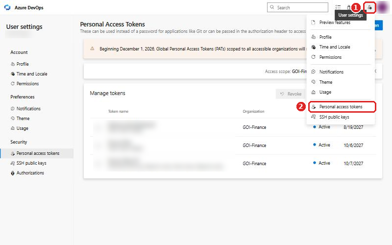
-
טוקן חדש
לוחצים על + New Token 3.
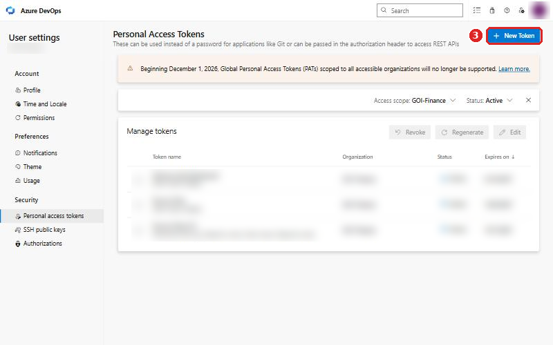
-
שם, ארגון והרשאה לפריטים
- 4 Name: שם שתזהו, למשל
Azuri. - 5 Organization:
GOI-Finance. לא "All accessible organizations". - 7 Scopes: משאירים Custom defined, ותחת Work Items מסמנים Read & write.
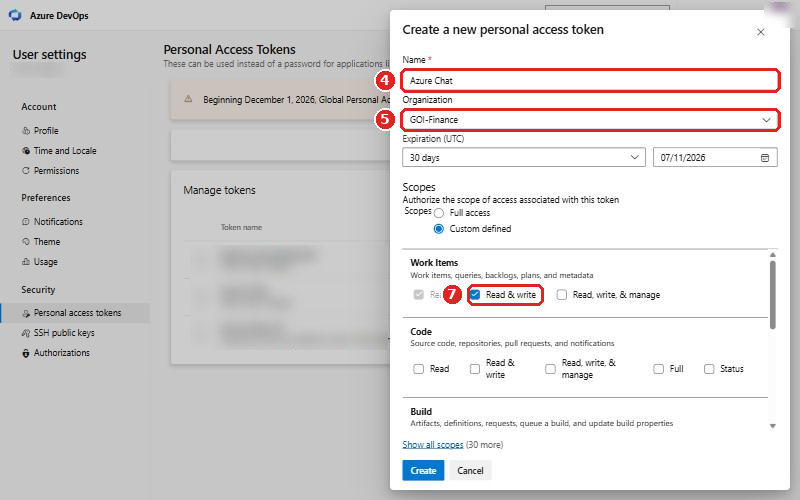
רוצים רק לשלוף נתונים בלי לעדכן? מספיק Read. כדי לעדכן וליצור פריטים צריך Read & write.
- 4 Name: שם שתזהו, למשל
-
תוקף
6 ב-Expiration בוחרים 90 יום, או Custom defined ובוחרים תאריך רחוק יותר (עד שנה). ככל שהתוקף ארוך יותר, פחות פעמים תצטרכו ליצור טוקן חדש.
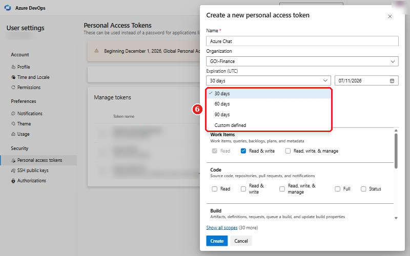
-
הרשאה לרשימת האנשים (מומלץ) ויצירה
לוחצים על Show all scopes בתחתית הרשימה, גוללים ל-Project and Team ומסמנים Read 8. בזכותה השדה Assigned To מציג את כל אנשי הצוותים. בלעדיה תוצג רק רשימה חלקית.
בסוף לוחצים Create 9.
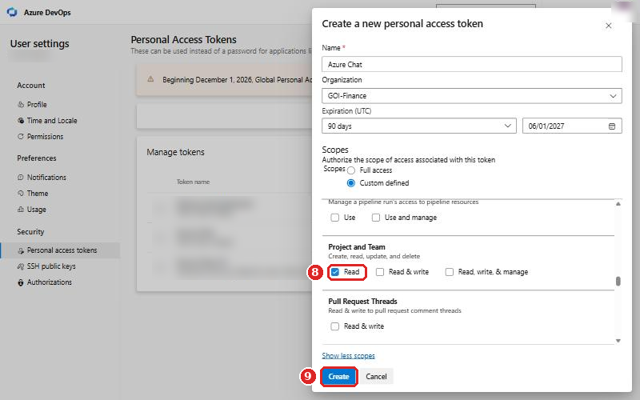
-
מעתיקים את הטוקן מיד
הטוקן מוצג פעם אחת בלבד. אחרי Create מופיע חלון "Success!" עם הטוקן. לוחצים על כפתור ההעתקה שלידו. אם סגרתם בלי להעתיק, יוצרים טוקן חדש.
-
מתחברים לכלי
פותחים את אז'ורי, מדביקים את הטוקן בשדה Personal Access Token ולוחצים כניסה עם טוקן.
- בלי סימון "לזכור את הטוקן": הטוקן נמחק כשסוגרים את הלשונית. מתאים למחשב משותף.
- עם סימון: נשמר במחשב הזה, ולא צריך להדביק בכל פעם. מתאים למחשב האישי שלכם.
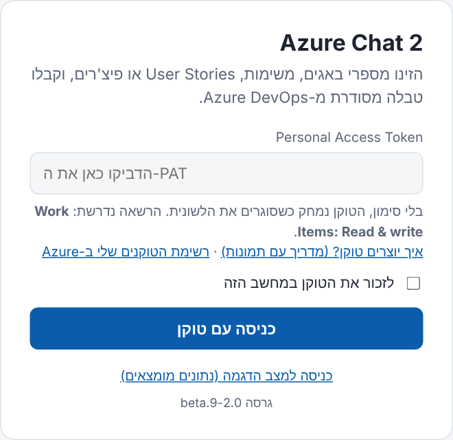
שמירה על הטוקן
- הטוקן שווה לסיסמה שלכם ל-Azure. לא שולחים אותו במייל, בצ'אט או בוואטסאפ, ולא מדביקים אותו באתרים אחרים.
- הכלי שולח את הטוקן רק ל-
dev.azure.com. הוא לא נשמר בשום שרת. - חשבתם שהטוקן נחשף? ברשימת הטוקנים מסמנים אותו ולוחצים Revoke, ויוצרים חדש.
שליפת פריטים לטבלה
כותבים בשורת הצ'אט מספר אחד או כמה מספרים, ומקבלים טבלה מסודרת עם השדות, ה-Description והתמונות.
110047 | פריט אחד |
110047 112074 112075 | כמה פריטים, כל סוג (באג, US, פיצ'ר...) |
110047 רק Title ו-State | רק העמודות שביקשתם |
110047 הוסף Tags | עמודה נוספת על הרגיל |
110047 בלי Description | בלי עמודה מסוימת |
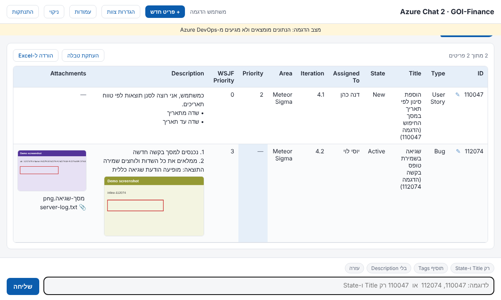
- הורדה ל-Excel והעתקת טבלה (כולל תמונות) נמצאים מעל כל טבלה. אחרי העתקה אפשר להדביק ב-Word, Outlook או Excel.
- הגדרות ← הגדרת עמודות בדוח (למעלה): בחירת העמודות שמוצגות כברירת מחדל.
- לחיצה על תמונה מגדילה אותה.
חיפוש לפי מילים
לא זוכרים מספר? כותבים מילים מהכותרת או מהתיאור, ומקבלים רשימה של פריטים מתאימים.
- מסמנים פריט אחד, כמה, או בחירת הכל, ולוחצים הצג בטבלה. לפריט בודד יש גם כפתור הצג בשורה שלו.
- כברירת מחדל מוצגים פריטים פתוחים בלבד. הכפתור כולל סגורים מחפש שוב גם בסגורים.
- בכותרת מחפשים גם חלק ממילה. בתיאור מחפשים מילים שלמות.
- אם בטקסט יש מספרים (למשל גרסה), מתחילים ב-
חפש:, אחרת הכלי יחשוב שאלה מספרי פריטים.
ייצוא לאקסל | חיפוש פריטים פתוחים |
חפש: גרסה 2026 | חיפוש כשיש מספרים בטקסט |
עדכון פריט מהטבלה
לוחצים על תא בטבלה או על ✎ ליד המספר. נפתח חלון עריכה בצד:
- משנים את הערך, או מוסיפים עוד שדות מ-+ הוספת שדה.
- אפשר להוסיף תגובה לדיון, והיא תיכנס ל-Discussion של הפריט.
- בתחתית מוצג מה ישתנה (לפני ← אחרי). רק לחיצה על שמירה ב-Azure שומרת.
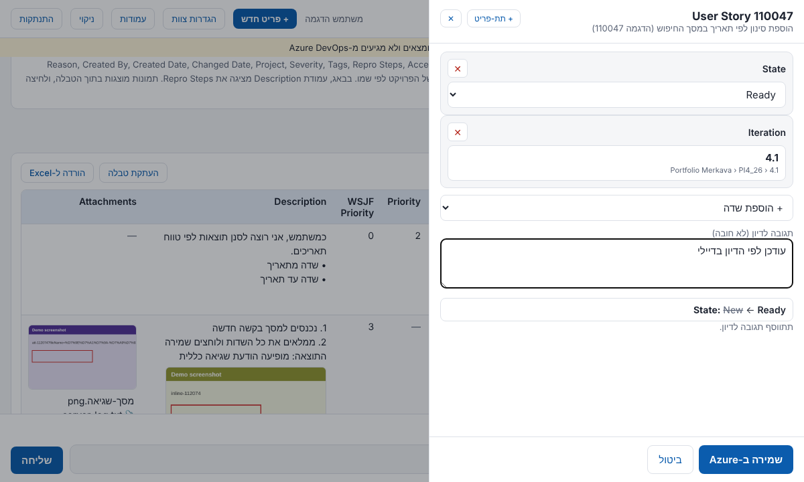
בדיקות לפני שמירה: שדות חובה (של Azure ושל הצוות) ותבנית ה-Description של Feature נבדקים בכל שמירה. אם מישהו אחר עדכן את הפריט בינתיים, השמירה נעצרת ולא דורסת את השינוי שלו.
בחירת אנשים, Area ו-Iteration
- Assigned To: רשימה עם חיפוש. מקלידים חלק מהשם ובוחרים. "אני" תמיד ראשון.
- Area ו-Iteration: עץ נפתח עם חיפוש. ב-Iteration מוצגים תאריכי הספרינט ותג נוכחי.
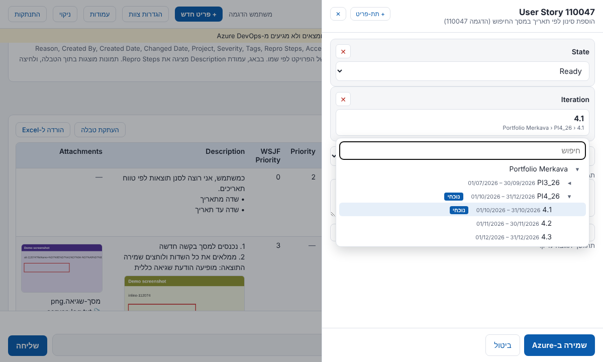
עדכון מהיר בצ'אט
אפשר לעדכן גם בכתיבה. הכלי מציג קודם תצוגה מקדימה, ושומר רק אחרי אישור.
112074 State Resolved | שינוי סטטוס |
110047 112074 Iteration 4.2 | אותו שינוי לכמה פריטים |
112074 שייך לאני | שיוך אליכם |
112074 Priority=2; Tags +SAP | כמה שדות, הוספת תגית |
112074 תגובה: טקסט | תגובה לדיון |
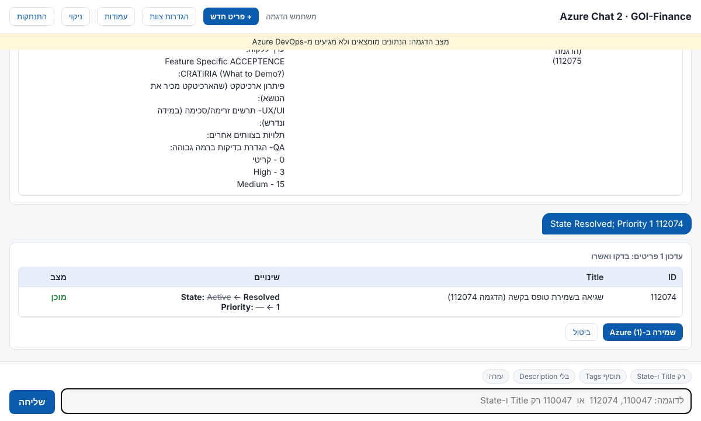
יצירת פריט חדש
שלוש דרכים: הכפתור + פריט חדש למעלה, + תת-פריט בחלון העריכה של פריט קיים, או פקודה בצ'אט.
- בוחרים סוג: Epic, Feature, User Story, Task או Bug.
- מתחילים מפריט האב (חובה). מקלידים את המספר, ושם האב מוצג מיד. לא זוכרים מספר? מקלידים מילים מהכותרת או מהתיאור ובוחרים מהרשימה (מוצגים רק פריטים פתוחים מהסוגים שיכולים להיות אב). ה-Area וה-Iteration נלקחים ממנו. אם עוד לא בחרתם סוג, הכלי מציע את הסוג הרגיל מתחת לאב (מתחת ל-Epic: Feature, מתחת ל-Feature: User Story).
- הכפתור בתחתית אומר בדיוק מה ייווצר, למשל יצירת Bug ב-Azure. בדקו אותו לפני הלחיצה.
- Feature חדש נפתח עם תבנית ה-Description של הצוות. כותרות החובה בתבנית חייבות תוכן.
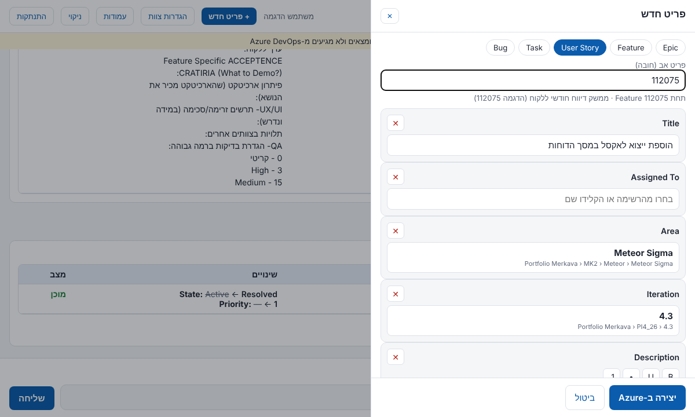
Epic: הטופס שואל "האם יש Epic אב?". כן: חובה להזין את מספר ה-Epic האב. לא: נוצר בלי אב.
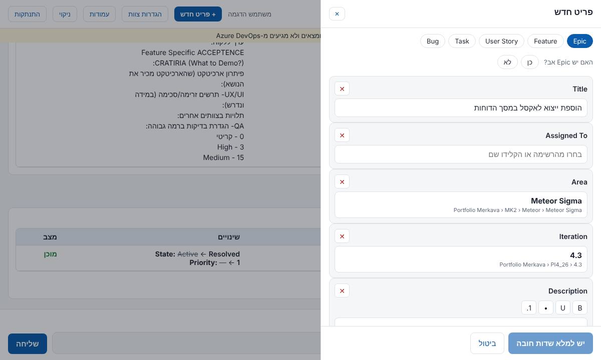
חדש Task תחת 110047: כותרת | Task תחת פריט קיים |
צור באג תחת 110047: כותרת | באג |
חדש Feature תחת 900001: כותרת; Leading Squad Meteor | עם שדות נוספים |
פקודה בצ'אט רק פותחת טופס ממולא. הפריט נוצר רק אחרי לחיצה על יצירת [סוג] ב-Azure.
פירוק פיצ'ר
כותבים במילים פשוטות מה הפיצ'ר צריך לעשות, ואז'ורי מפרק אותו ל-User Stories לפי ה-Skill של הצוות (Agile Feature Breakdown). אחר כך אפשר ליצור את הכל ב-Azure בלחיצה אחת. שום דבר לא נשמר ב-Azure בלי אישור שלכם.
- לוחצים על פירוק פיצ'ר למעלה, או כותבים בצ'אט
פרק:ואחריו תיאור הפיצ'ר. - עונים על שתי שאלות חובה: מה הערך העסקי ללקוח, והאם נדרש UI/UX. אפשר גם לכתוב מי המשתמש העיקרי (חשב, רכזת וכו').
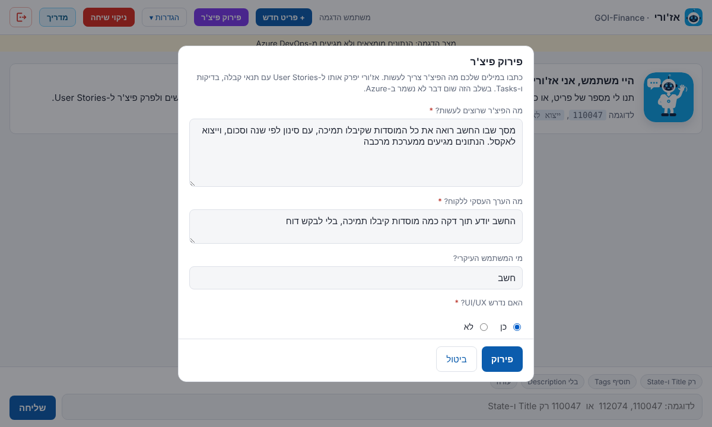
מקבלים בצ'אט:
- כל User Story בפורמט "כ[משתמש], אני רוצה [פעולה] כך ש[ערך]", עם Story Points (לפחות 2), עדיפות 1 עד 4 ותבנית הפירוק.
- בלחיצה על תנאי קבלה, בדיקות ו-Tasks: תנאי קבלה, 3 בדיקות חיוביות, 3 שליליות, וה-Tasks שייפתחו תחת ה-US.
- תכנון ספרינטים לפי העדיפות. כשנדרש ממשק למערכת אחרת, ה-US הראשון הוא Spike לבדיקת הממשק.
- אם נדרש UI/UX: פרומפט עם פירוט המסכים, השדות והכפתורים.
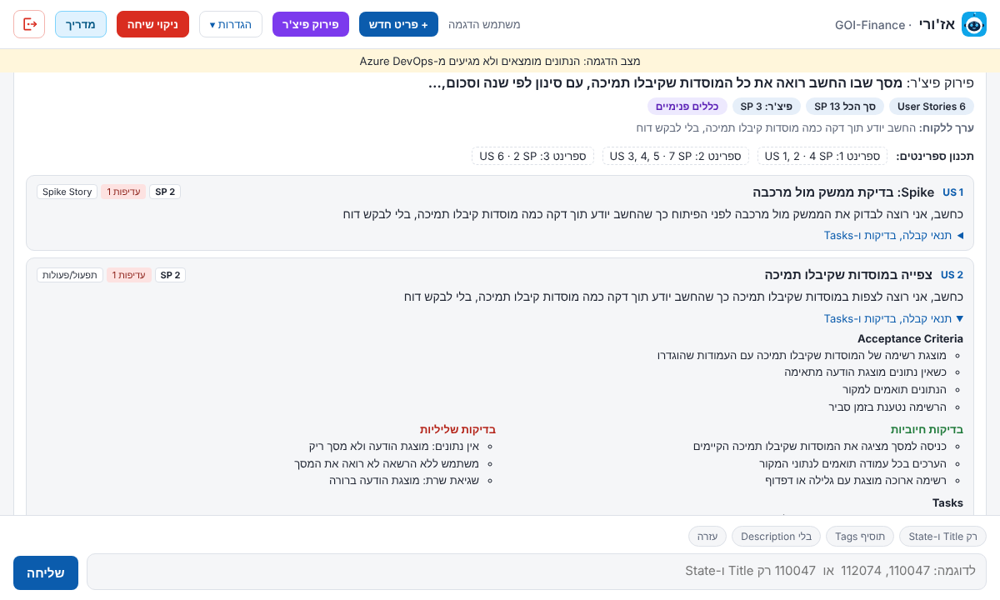
| העתקה | כל הפירוק כטקסט, להדבקה במייל או במסמך |
| CSV / Excel | קובץ עם העמודות של ה-Skill: US Name, Description, Acceptance Criteria, Story Points, Priority, Splitting Pattern, Positive Tests, Negative Tests, Tasks |
| שיפור עם AI | בוחרים כלי (Copilot הארגוני, ChatGPT, Claude או Gemini) ולוחצים "העתקה ופתיחה": ההנחיה מועתקת והכלי נפתח בלשונית חדשה, ושם לוחצים Ctrl+V ושולחים (דפדפן לא מאפשר לאתר אחד להדביק בלשונית של אתר אחר). כל כלי AI מחזיר את אותו קובץ: azuri-breakdown.csv, באותו מבנה כמו הורדת ה-CSV מאז'ורי. מעלים את הקובץ (או גוררים אותו) ואז'ורי מפרק מחדש. אפשר גם להדביק את התוכן |
| ייבוא מקובץ | בחלון "פירוק פיצ'ר": מעלים קובץ CSV או Excel במבנה של אז'ורי (מ-AI, או קובץ שהורדתם וערכתם באקסל) |
| יצירה ב-Azure | יוצר את ה-Feature, ה-User Stories וה-Tasks (ראו בהמשך) |
| פירוק מחדש | פותח את החלון עם אותן תשובות, כדי לשנות ולנסות שוב |
יצירה ב-Azure
הכפתור הירוק יצירה ב-Azure פותח מסך אחד עם כל מה שייווצר:
- ה-Feature: שאלה "האם יש Epic אב?" (כן: בוחרים Epic לפי מספר או מילים, וה-Area וה-Iteration נלקחים ממנו). שדות החובה של הצוות ושל Azure מסומנים באדום. Story Points Values נבחר מהרשימה של Azure לפי ה-SP שהפירוק נתן לפיצ'ר, ואפשר לשנות.
- Description: נבנה מתבנית הצוות. כל כותרת מקבלת את מה שמתאים לה מהפירוק (תיאור, ערך ללקוח, תנאי קבלה, UX/UI, תלויות, בדיקות). ב-User Story נכנסים גם תנאי הקבלה ו-3+3 הבדיקות.
- שדות לכל ה-User Stories: למשל לקוח מוביל ו-Leading Squad. הם ממולאים מה-Feature, ומשתנים יחד איתו עד שמשנים אותם כאן.
- ספרינטים: ספרינט 1 בתכנון הוא הספרינט הנוכחי, ספרינט 2 הבא אחריו, וכן הלאה. אפשר לבחור ספרינט התחלה אחר, או לשנות Iteration לכל US בנפרד.
- Tasks: לכל Task ממלאים Original Estimate בשעות (חובה). אפשר לשנות כותרות, ולהוריד את הסימון מ-US או Task שלא רוצים ליצור.
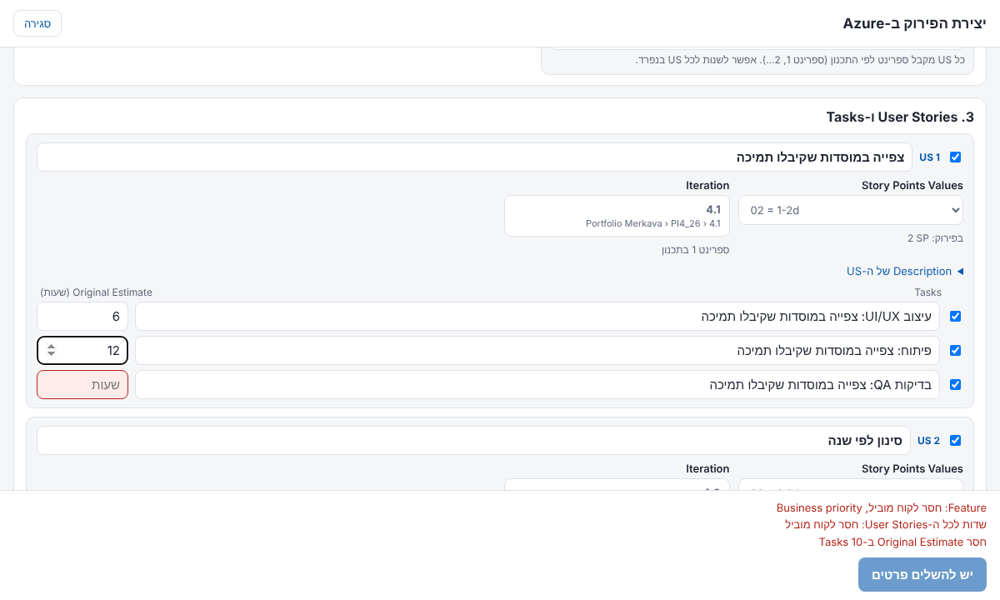
כשהכל מלא, הכפתור אומר כמה פריטים ייווצרו. אחרי לחיצה יש אישור נוסף, ורק אז נוצרים הפריטים לפי הסדר: Feature, כל US, וה-Tasks שלו. בסוף מופיעה בצ'אט רשימה עם קישורים. אם פריט נכשל, השאר ממשיכים, והרשימה מראה מה לא נוצר ולמה. לכל הפריטים נוספת התגית אז'ורי-פירוק.
איך זה עובד: הפירוק הראשון נעשה בדפדפן לפי כללים קבועים, בלי שירות חיצוני. הוא נקודת התחלה טובה, אבל כדאי לעבור עליו. "שיפור עם AI" שולח לצ'אט רק את תיאור הפיצ'ר והטיוטה, בלי טוקן ובלי נתונים מ-Azure.
הגדרות לפתיחת פריט חדש
בהגדרות ← הגדרות לפתיחת פריט חדש מגדירים אילו שדות חובה לכל סוג, ואת תבנית ה-Description של Feature (כותרות, חובה או לא, תוכן התחלתי). השמירה משפיעה על כל הצוות תוך כדקה, ודורשת הרשאת עריכה ב-GitHub. בדרך כלל רק מנהל הכלי משנה אותן.
מצב הדגמה
במסך הכניסה, כניסה למצב הדגמה פותחת את הכלי עם נתונים מומצאים, בלי טוקן. טוב לתרגול: שום דבר לא נשמר ב-Azure.
"Azure DevOps דחה את הטוקן" [קוד N2]
הטוקן פג תוקף, בוטל, או לא נוצר לארגון GOI-Finance. צרו טוקן חדש לפי השלבים והתחברו איתו.
"Azure DevOps דחה את השמירה" [קוד W1]
שליפה עובדת אבל שמירה או יצירה לא: לטוקן יש רק הרשאת Read. צרו טוקן חדש עם Work Items: Read & write (שלב 3 ביצירת טוקן), התנתקו והתחברו איתו.
"הטוקן לא תקין, פג תוקפו, או שאין לו הרשאה"
בדקו ברשימת הטוקנים שהטוקן מסומן Active, שהארגון הוא GOI-Finance, ושיש לו Work Items. לעדכון וליצירה צריך Read & write.
"הטוקן מכיל תווים שאינם באנגלית"
כנראה המקלדת הייתה בעברית, או שנכנס תו נוסף בהעתקה. העתיקו שוב את הטוקן והדביקו (Ctrl+V), בלי להקליד.
"הדפדפן לא מצליח להגיע ל-dev.azure.com" [קוד N0]
אין חיבור ל-Azure מהמחשב. בדקו חיבור רשת או VPN, ונסו לפתוח את dev.azure.com בלשונית רגילה.
"הדפדפן חוסם בקשות מהאתר הזה ל-Azure" [קוד N1]
תוסף בדפדפן או פרוקסי ארגוני חוסם. נסו בחלון InPrivate / Incognito או בדפדפן אחר. אם זה לא עוזר, פנו לתמיכה.
ב-Assigned To מופיעים רק חלק מהאנשים
לטוקן אין הרשאת Project and Team: Read, ולכן מוצגים רק מי שעבדו בפרויקט ב-90 הימים האחרונים. צרו טוקן חדש עם ההרשאה (שלב 5).
"אין לכם הרשאה לפריטים האלה"
ההרשאות ב-Azure עצמו לא מאפשרות לכם לראות או לעדכן את הפריט. הכלי לא עוקף הרשאות. פנו למנהל הפרויקט ב-Azure.
"מישהו אחר עדכן את הפריט"
מישהו שמר שינוי בזמן שעבדתם. פתחו שוב את הפריט (הערכים יתעדכנו) ובצעו את השינוי מחדש.
שמירה לא מתאפשרת: "יש למלא שדות חובה"
בתחתית חלון העריכה מפורט מה חסר: שדות חובה, כותרות חובה בתבנית, פריט אב, או התשובה לשאלה על Epic אב.
לא מצאתם? צלמו את המסך עם הודעת השגיאה (כולל מספר הגרסה בתחתית מסך הכניסה) ושלחו למנהל הכלי.